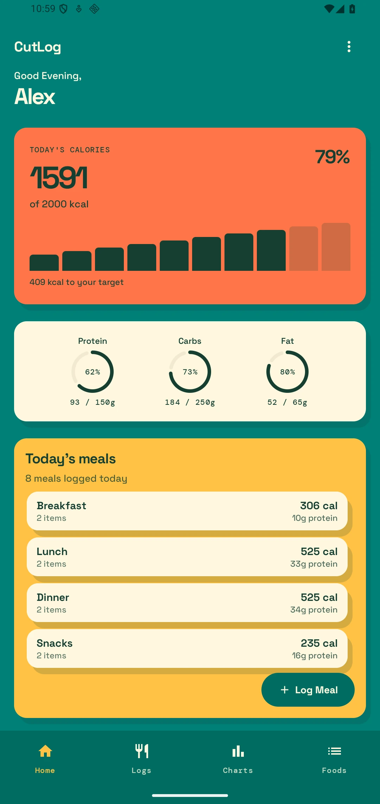
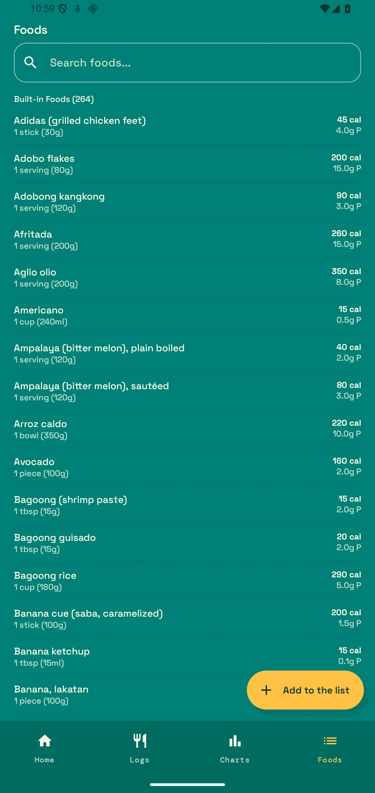
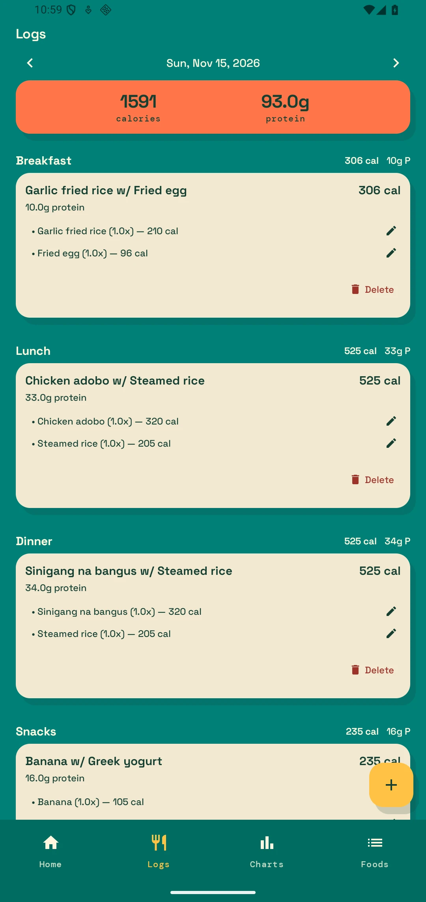
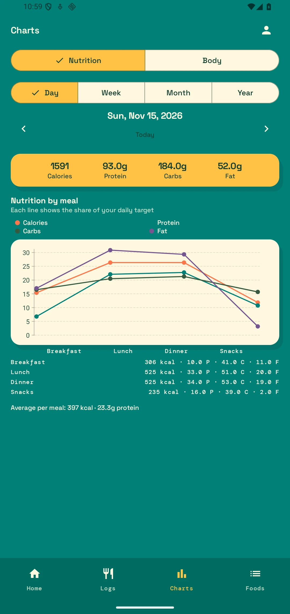
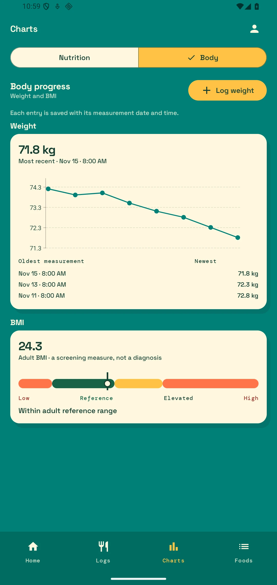

Food & weight tracker for Android
Log what
you eat.
From chicken adobo to your usual breakfast. Track calories and macros, set daily targets, and see how your weight changes over time.

Food database & meal log
Start with the food you know.
Search for Filipino favorites like sinigang na bangus and adobong kangkong. Adjust a portion or add a custom food, then see everything grouped by meal.
Find your food
Search by name or browse serving sizes and nutrition.

See the whole day
Review calories and protein for each meal.

Nutrition & weight charts
See how things change.
Compare calories, protein, carbs, and fat across meals or over time. Log weigh-ins to see your weight trend alongside your nutrition history.
Nutrition by meal
See how each meal contributes to your daily targets.

Weight over time
See your weigh-ins together with the date and time of each entry.

Estimate nutrition from a photo.
Use an AI app you choose when you’re adding a custom food.
- Take or choose a food photo.
- Share it with your AI app. CutLog copies a prompt for you to paste there.
- Paste the response back into CutLog. Review and adjust the estimated nutrition before saving.
Today’s totals on your home screen.
Add a calorie or macro widget to see how you’re doing against your targets without opening the app.